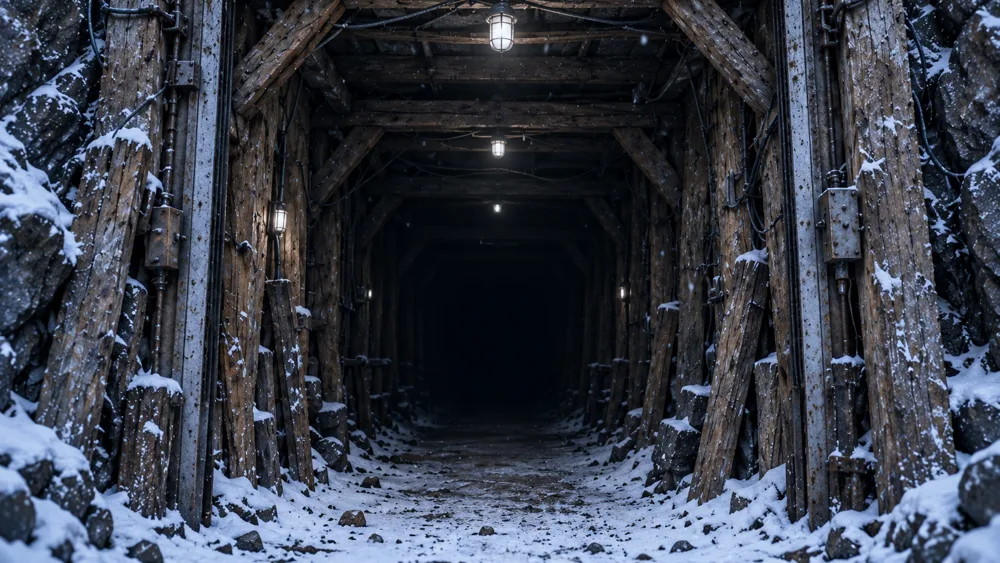
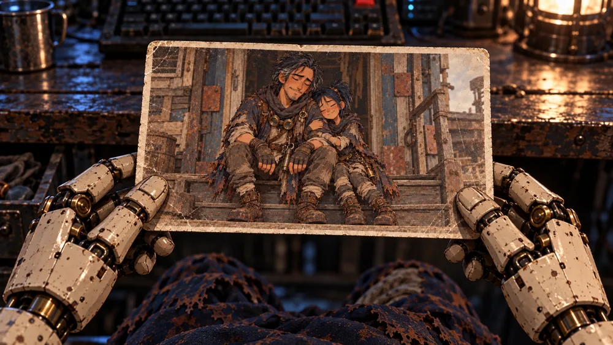
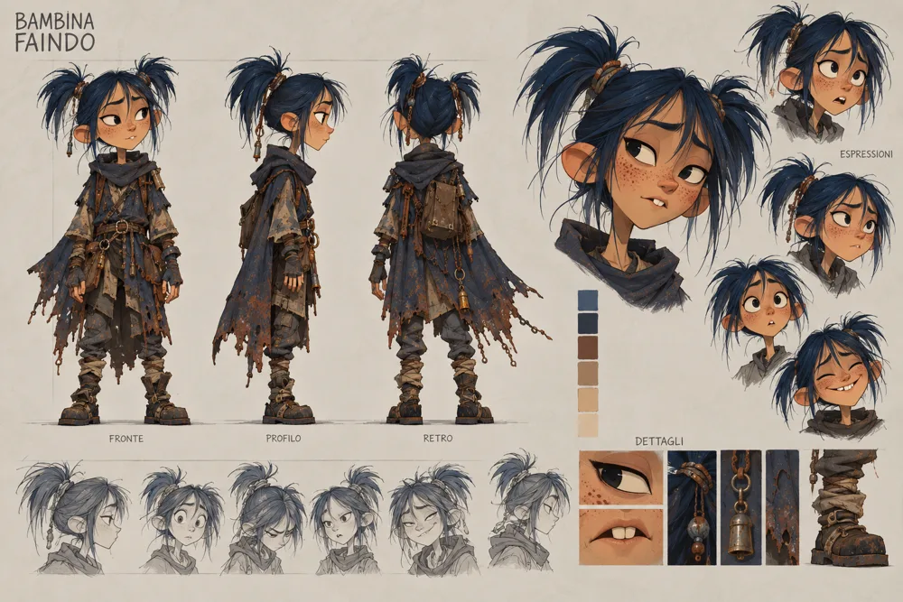
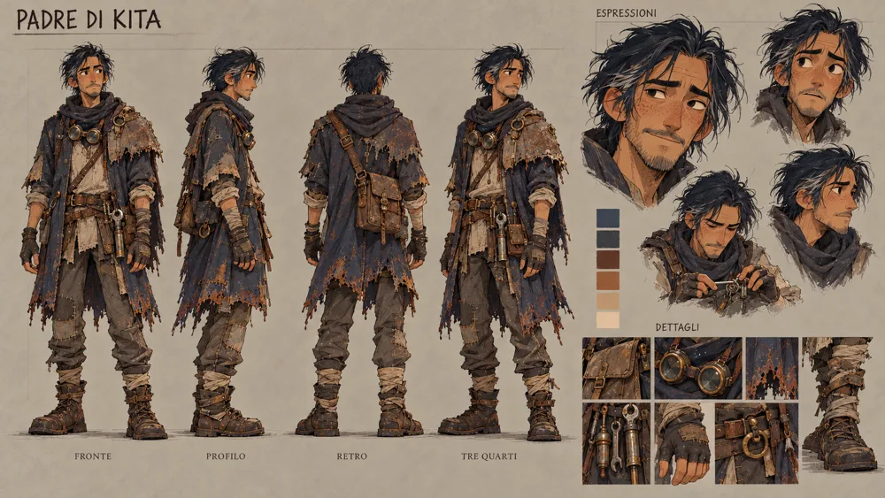
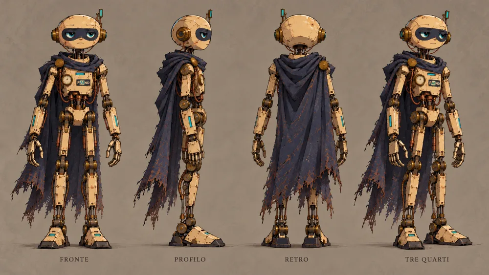
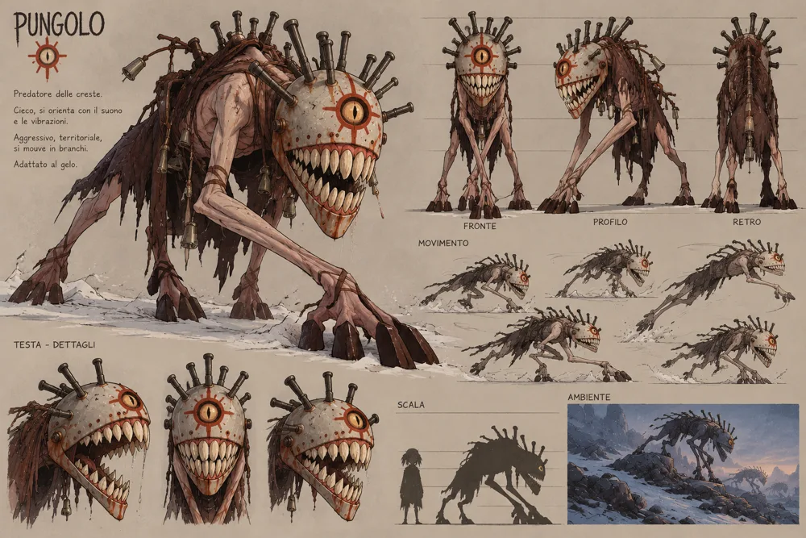

Teaser
FAINDORG – Teaser of the steampunk animated series by FAIND
A new ice age has swept over a world of humans, robots and creatures. Among ruined cities, snowbound forests and shelters built from the remains of industrial civilization, life goes on. But out in the snow, something is moving.
This teaser introduces FAINDORG, the original animated series by FAIND. At its center are Faindo, Kita and the people of a world where technology and survival are bound together, while the line between what is human and what is artificial grows thinner.
A post-apocalyptic science fiction adventure with a steampunk look: mystery, unexpected encounters, and bonds that hold out against the cold.
The journey starts here.
Inside the world of FAINDORG
Scenes, places and characters from the series.





